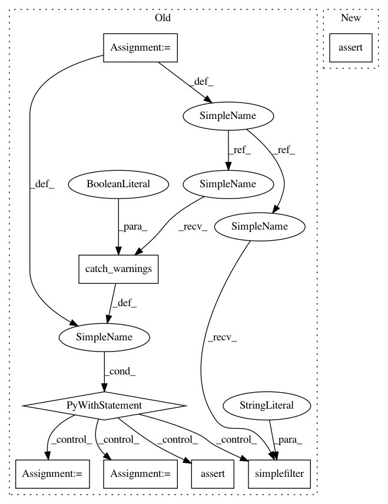

3fdddc4841d9f338dcdd90cc50d6c3fa9bd22908,dipy/reconst/tests/test_csdeconv.py,,test_response_from_mask_deprecated,#,69
Before Change
def test_response_from_mask_deprecated():
with warnings.catch_warnings(record=True) as cw:
warnings.simplefilter("always", DeprecationWarning)
gtab, data, mask, _, _ = get_test_data()
_ = response_from_mask(gtab, data, mask)
npt.assert_(issubclass(cw[0].category, DeprecationWarning))
def test_recursive_response_calibration():
Test the recursive response calibration method.
After Change
def test_response_from_mask_deprecated():
gtab, data, mask, _, _ = get_test_data()
npt.assert_raises(ExpiredDeprecationError, response_from_mask,
gtab, data, mask)
def test_recursive_response_calibration():
In pattern: SUPERPATTERN
Frequency: 3
Non-data size: 8
Instances
Project Name: nipy/dipy
Commit Name: 3fdddc4841d9f338dcdd90cc50d6c3fa9bd22908
Time: 2021-03-17
Author: skab12@gmail.com
File Name: dipy/reconst/tests/test_csdeconv.py
Class Name:
Method Name: test_response_from_mask_deprecated
Project Name: nipy/dipy
Commit Name: 3fdddc4841d9f338dcdd90cc50d6c3fa9bd22908
Time: 2021-03-17
Author: skab12@gmail.com
File Name: dipy/reconst/tests/test_csdeconv.py
Class Name:
Method Name: test_auto_response_deprecated
Project Name: nipy/dipy
Commit Name: 3fdddc4841d9f338dcdd90cc50d6c3fa9bd22908
Time: 2021-03-17
Author: skab12@gmail.com
File Name: dipy/core/tests/test_gradients.py
Class Name:
Method Name: test_unique_bvals_deprecated
Project Name: nipy/dipy
Commit Name: 3fdddc4841d9f338dcdd90cc50d6c3fa9bd22908
Time: 2021-03-17
Author: skab12@gmail.com
File Name: dipy/reconst/tests/test_csdeconv.py
Class Name:
Method Name: test_response_from_mask_deprecated